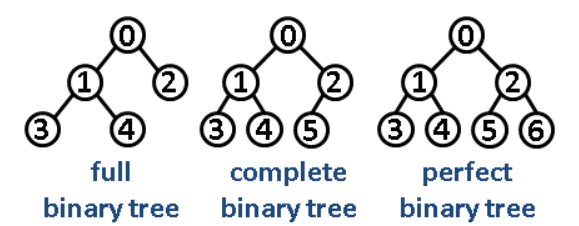
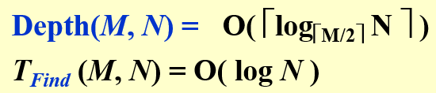
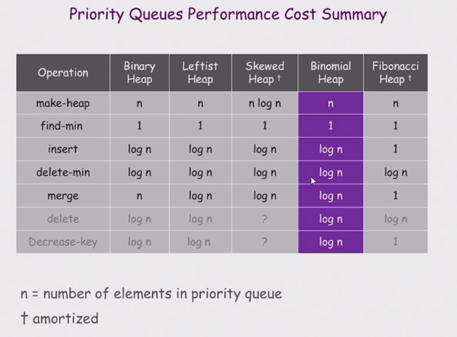
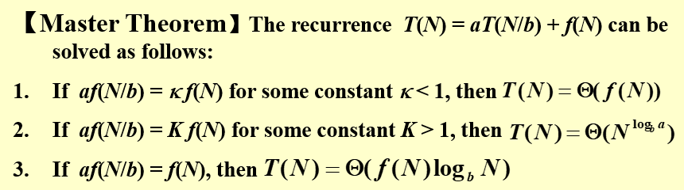
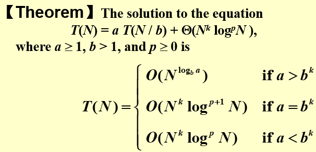

ADS Final Review
My review note before final exam of ZJU Advanced Data Structure and Algorithm, 2022 Spring & Summer.
Basics
- binary tree
- perfect：完美二叉树，每一层都被完全填充 more
- complete：完全二叉树，除最后一层外都是完全填充，最后一层左对齐
- full：完满二叉树，每个结点要么两个子结点，要么没有子结点
- 
Ch2. 红黑树、B+ 树
- \(h\leq 2\log(N+1)\)
- \(sizeof(x) \geq 2^{bh(x)}-1\) ( 全黑取等 )
- \(bh(x)\geq\frac 12h(x)\)
- 红黑插入：必插红，处理双红
- case 1：父叔同红，父祖换色祖上传。
- case 2：叔黑子内，父子旋转使子外。
- case 3：叔黑子外。父祖换色父旋升。
- 红黑删除：
- 删红小事。0/1 度的红毫无威胁。2 度红，若拿来替换的是黑，则需要让该黑变成双黑结点，然后类似删黑操作即可。主要处理删黑，删黑则先使其为双黑。
- 兄红转兄黑。父兄换色兄旋升
。 （case 1） - 兄黑远黑近侄红，侄兄换色侄旋升
。 （case 3） - 兄黑远红化其黑，父兄换色兄旋升
。 （case 4） - 兄侄全黑则兄红，黑父不当则上传
。 （case 2） - B+：根 2 到 M，非根 \(\lceil M/2\rceil\) 到 M。
- 
Ch4. 左倾堆和斜堆

-
左倾堆针对二叉堆的 merge 进行了改进。斜堆不需要维护 npl，但是 make-heap 代价较大。二项堆看似没有改进，其实是斐波那契堆的铺垫，斐波那契堆成功将插入、merge 都变成了 o(1)。
-
Npl(NULL) = -1
- 左倾堆右路径上有 r 个结点，则总结点数至少为 \(2^r-1\)
- 斜堆轻结点类似左倾堆，也受 \(\log N\) 控制
Ch5. 二项堆
- 二项堆插入的均摊时间是 O(1)
- 二项堆可以通过 n 次插入实现均摊的线性时间
Ch7. 分治算法
- 基本主定理
- 比较 \(f(N)\) 与 \(N^{\log_ba}\)，取较大的量级。同量级，则 \(O(N^{\log_ba}\log N)\)
- 
- 针对有 log 的 N 量级相同情况，有
- 
- 需要关注的只是中间情况。
Ch11. 近似算法
- polynomial-time approximation scheme (PTAS): 对 (\(1+\varepsilon\))-approximation 算法，固定的 \(\varepsilon\) 情况下，时间复杂度是 \(N\) 的多项式级别
- FPTAS(F:fully)：既是 \(N\) 又是 \(1/\varepsilon\) 的多项式级别
- Bin Packing
- Next Fit: 2
- First Fit, Best Fit: 1.7
- Online algorithm: 至少 5/3
- offline - first fit decreasing: 11/9
- The Knapsack Problem
- greedy 策略是 2- 近似的
- DP 结果为 \(O(n^2p_{max})\)：NP
Ch12. 局部搜索
- Big-improvement-flip
- 大于 \(\frac {2\varepsilon}{|V|}W(A, B)\) 才翻转
- \((2+\varepsilon)\)-approximation
- \(O(n/\varepsilon\log W)\)
- k-flip: 增大搜索邻域 - K-L 启发式
Ch13. 随机化算法
- Hiring problem
- Naive: O(\(NC_h+NC_i\))
- 随机化：\(O(C_h\ln N+NC_i)\)
- online: \(k=\max\{\lceil\frac{N}{e}\rceil, \lfloor \frac Ne\rfloor\}\)
- hire only once, 最优概率为 \(k/N\ln(N/k)\) 到 \(k/N\ln(N-1/k-1)\)
Ch14. 并行算法
- n 数之和
- \(T(n)=\log n+2, W(n)=2n\)
- 前缀和
- \(T(n)=O(\log n), W(n)=O(n)\)
- merge
- \(T(n)=O(\log n), W(n)=O(n)\)
- Maximum Finding
- 大功率跑车 \(T(n)=1, W(n)=O(n^2)\)
- 双对数基本：\(T(n)=O(\log\log n), W(n)=O(n\log\log n)\)
- \(T(n)\leq T(\sqrt n)+c_1, W(n)\leq \sqrt nW(\sqrt n)+c_2n\)
- 双对数顶层改进：顶层分为 \(\log\log n\) 份
- \(T(n)=O(h+\log\log(n/h))=O(\log\log n)\)
- \(W(n)=O(h\times(n/h)+(n/h)\log \log (n/h))=O(n)\)
- 随机取样：\(T(n)=O(1), W(n)=O(n)\)，失败概率 \(O(1/n^c)\)
- \(n^{1/8}\) 中随机取样。\(T=O(1), W=O(n^{7/8})\)
- 每个 \(n^{1/8}\) 块取最大值。\(T=O(1),W=O(n^{3/4}\times n^{2\times 1/8})=O(n)\)
- 每个 \(n^{1/4}\) 块取最大值。\(T=O(1),W=O(n^{1/2}\times n^{2\times 1/4})=O(n)\)
- 取最大值。\(T=O(1),W=O(n^{2\times 1/2})=O(n)\)
Ch15. 外排序
-
k-way merge need 2k tapes, number of passes =
-
\[ 1+\lceil \log_k(N/M)\rceil \]
-
buffer：2kinput, 2output
-
huffman tree